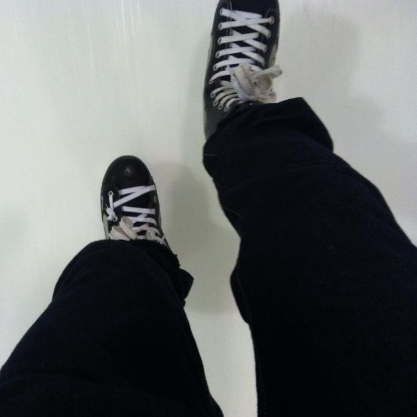
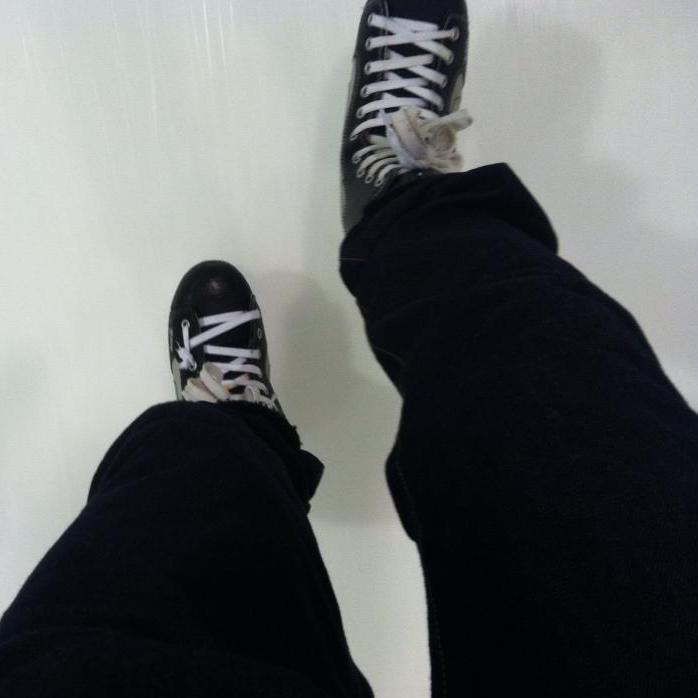

Projects
Date: 11/05/2017
Past Projects
Class Projects
- Distributed AubieBook Messaging System
- The Maze Runner with Snakes and Ladders
- Bank Transaction System
- Concurrent Programming - Bank Clerks Simulation
- Algorithm Analysis
- Online Exam Web Application
- String Processing Server & Client
- Proxy DNS Server
- AubieBook Messaging software written in C++. This was a individual lab assignment for Software Construction class.
- With pre-designed game map, the program creates a maze runner game with snakes and ladders. The program was written in C++. This was a individual lab assignment for Software Construction class.
- A simple bank transaction system written in C++. This was a individual lab assignment for Software Construction class.
- A simple bank simulation program created using concurrent programming technique. The program was written in Java. This was a programming assignment for Principles of Programming Languages class.
- Empirical analysis of four different algorithms. The program was written in C++. This was a programming assignment for Algorithm class.
- An online web application for taking exams. The whole system was made using JSP, XML, and MySQL. This was a group project for our Web Development class.
- The goal of this project was to create two string processing servers and clients using TCP and UDP. Both servers were written in C and clients were written in Java. This was a group lab assignment in our Computer Networks class.
- We created a simple proxy DNS server and client using UDP. The server was written in C and client was written in Java. This was a group lab assignment in our Computer Networks class.
Personal Projects
- RTNT (Recommendation Thanks No Thanks)
- A simple Google Chrome plugin that hides the recommendation section of Youtube.
Future Projects
| Learning | Programming Projects |
|---|---|
|
Programming Languages
|
Web (HTML & Javascript)
Software |